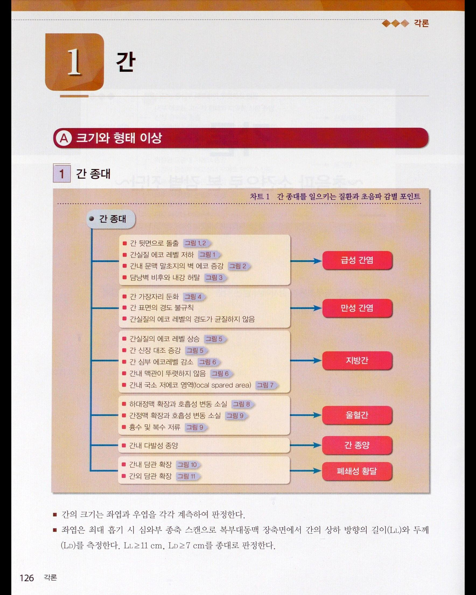
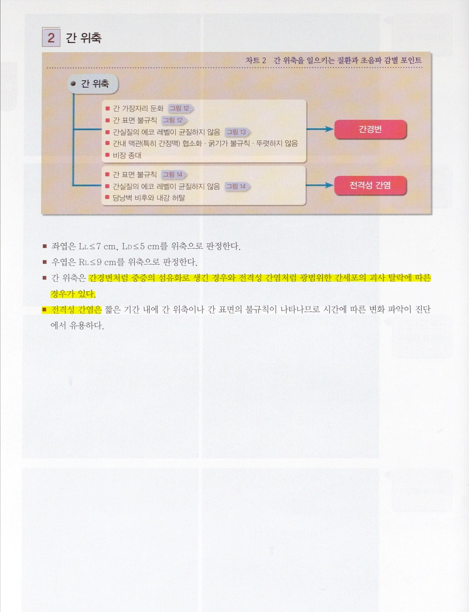

복부 · 추적
복부초음파 우연종 감별과 추적 — 간·담낭·신장
간·담낭·신장 우연종의 전형적 초음파 소견과 추적·추가검사 지침 정리
간에서 발견되는 우연종
혈관종(hemangioma)
원문에는 간 혈관종의 전형적 초음파 소견을 균일한 저에코, 경계 명확, 후방음향증강으로 기술하고 있으며, 페이지 상단에는 hyperechoic으로도 기재되어 있어 원문 내 표현이 혼재한다(확인 필요).
- 전형적 초음파 소견이면 추적 불필요.
- 비전형적 소견이나 크기 증가 시 추가 영상검사가 권고된다.
FNH
중심 반흔(central scar)이 관찰된다.
간세포암의 에코 양상
간암의 경우 크기(size)별로 에코 양상이 다르다.
단순 낭종
- 증상이 없고 초음파상 전형적 소견(균일한 무에코, 얇은 벽, 후방음향증강)이면 추적 검사가 필요 없다.
- 단, 벽 결절, 내부 격벽, 증상(통증, 압박 등)이 동반되면 추가 영상검사 및 임상적 추적이 필요하다.
결절·종괴
만성 간질환(간염, 간경변), 암 병력, B형간염 항원 양성, 종양표지자 상승 등 위험인자가 있으면 즉시 추가 영상검사(CT/MRI/CEUS) 및 3~6개월 추적이 필요하다.[1-3]


담낭에서 발견되는 우연종
담낭 용종
- 6mm 미만, 무증상, 위험인자(고령, 담석, 담낭벽 비후, 원발성 경화성 담관염 등)가 없으면 6~12개월마다 추적이 권고된다.
- 6mm 이상, 위험인자 동반, 크기 증가, 담낭벽 비후가 있으면 즉시 추가 영상검사 및 외과적 평가가 필요하다.[4]
신장에서 발견되는 우연종
단순 낭종
전형적 소견(균일한 무에코, 얇은 벽, 후방음향증강)이면 추적 불필요하다.
복잡 낭종
Bosniak II 이상, 내부 결절, 격벽, 고에코, 증상 동반 시 추가 영상검사 및 6~12개월 추적이 필요하다.
신장 종괴
악성 위험인자(고령, 흡연, 가족력, 증상 등)가 있으면 즉시 추가 영상검사 및 비뇨기과 평가가 필요하다.
요약표
| 장기 | 병변 | 전형적 소견 | 추적·추가검사 |
|---|---|---|---|
| 간 | 단순 낭종 | 균일한 무에코, 얇은 벽, 후방음향증강 | 추적 불필요 |
| 간 | 혈관종 | 균일한 저에코, 경계 명확, 후방음향증강 | 추적 불필요 |
| 간 | 결절·종괴(위험인자 동반) | 만성 간질환, 암 병력, B형간염 항원 양성, 종양표지자 상승 | 즉시 CT/MRI/CEUS 및 3~6개월 추적 |
| 담낭 | 용종(6mm 미만, 무증상, 위험인자 없음) | - | 6~12개월마다 추적 |
| 담낭 | 용종(6mm 이상, 위험인자 동반, 크기 증가, 벽 비후) | - | 즉시 추가 영상검사 및 외과적 평가 |
| 신장 | 단순 낭종 | 균일한 무에코, 얇은 벽, 후방음향증강 | 추적 불필요 |
| 신장 | 복잡 낭종(Bosniak II 이상) | 내부 결절, 격벽, 고에코, 증상 | 추가 영상검사 및 6~12개월 추적 |